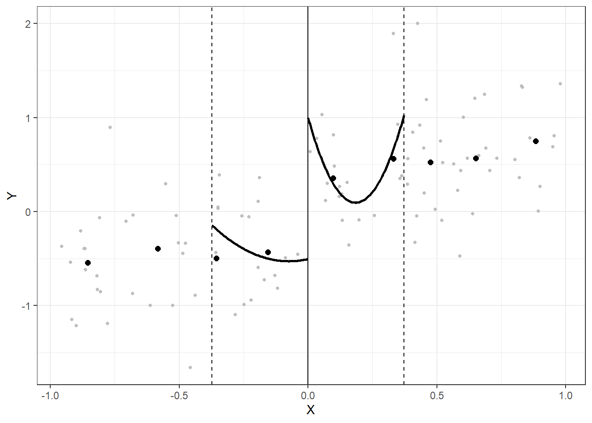

rdviz
rdviz is an R package that creates visualizations for regression discontinuity analyses. It builds on the automated bandwidth selection and local polynomial estimation techniques from the rdrobust package (Calonico, Cattaneo, Farrell and Titiunik 2015).
Installation
The rdviz package is currently available on GitHub. You can install it using the devtools package.
devtools::install_github('joeornstein/rdviz')
library(rdviz)Example
The X and Y variables are randomly generated data included with the package. Here are two examples visualizations using these data, varying the polynomial order.
rdviz(x = X, y = Y, c = 0, p = 1)
rdviz(x = X, y = Y, c = 0, p = 2)